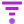

A geometric funnel: three tapering bars feeding one terminal dot. Many inputs, one result — which is the product's whole promise. Everything is built on a 24-unit grid with a constant 7-unit taper and a 12-unit centre axis.

These are actual pixel sizes, not scaled previews. The three-bar mark starts to lose its gaps somewhere around 20px — which is exactly why the favicon is a different, two-bar drawing rather than a smaller copy of this one.
The tab below is a mock-up, not a live tab. To see the genuine article, add this to any project head:
<link rel="icon" type="image/svg+xml" href="brand/favicon/favicon.svg" />
The wordmark is currently live <text>, not outlines. It is rendered with a font stack, so the letterforms depend on the viewer. Everything in this folder that shows a wordmark needs the text converted to paths before it is used for real. The mark-only files have no such caveat.
Clear space on all four sides equals 1× the terminal dot's diameter — six units on the 24-grid. It is a measure the geometry already provides, so nobody has to eyeball it. Nothing enters that band: no text, no rule, no page edge, no other logo.
| Grid | 24 × 24, centre axis x=12 |
| Taper | bar widths 20 / 13 / 6 — constant 7-unit step |
| Bar / gap | 3 / 2.5 units, corner radius 0.75 |
| Terminal dot | r=3 — same width as the final bar |
| Min size, mark | 20px digital · 5mm print |
| Min size, lockup | 96px digital · 28mm print |
| Below 20px | Use favicon/favicon.svg, not the mark |
Two values, and only two. The magenta is the funnel body; the violet is the result. They are two steps of the same ramp — --ds-color-primary-600 and --ds-color-primary-500 — so brand and product are the same colour, and the hue shift through the ramp (violet at 500, magenta at 600) is what keeps the dot legible against the body at 16px.
| Item | Why it's open | Suggested answer |
|---|---|---|
| Wordmark letterforms | Live text, not outlines. Letterforms depend on a font being installed. | Pick one face and convert to paths. Poppins is the intended geometric look; Century Gothic is the closest widely-available match. |
| Raster favicons | No image tooling in this environment, so PNGs could not be generated. | npx @favicone/favicons — or render the SVG at 16/32/48/180px in any vector editor. |
| Is the 2-bar favicon needed? | Depends on whether the 3-bar mark survives 16px in your browser — see the head-to-head above. | Keep it. It costs nothing and it is the safer asset for real-world tab strips. |
| Maskable icon | Android pads icons unpredictably and crops up to 20%. | Produce a variant with the mark inside a 40% safe-zone circle. |
| Trademark | Not checked. | Search your class before you print anything. |
| Name collision | A separate Jovalen Business OS app already exists in this repo, and the design system still says "Funnel OS" throughout. | Confirm whether these are one brand, then decide whether to sweep the design system and docs. |